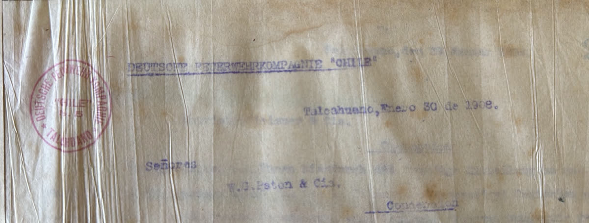
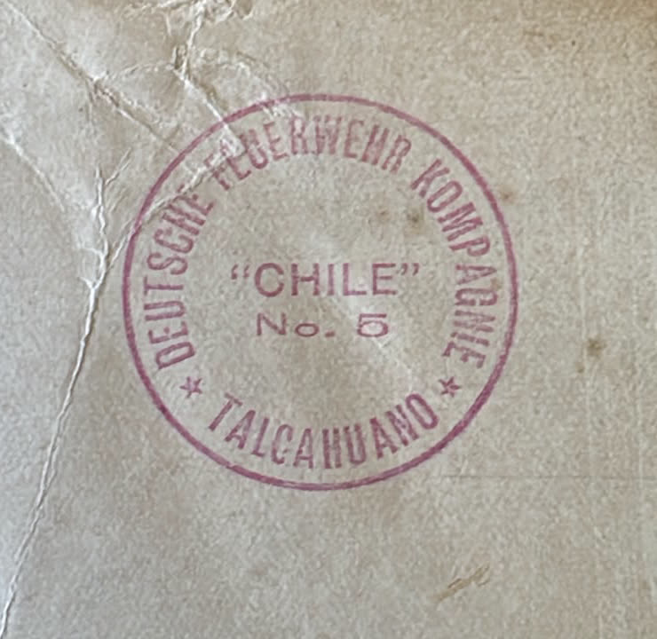
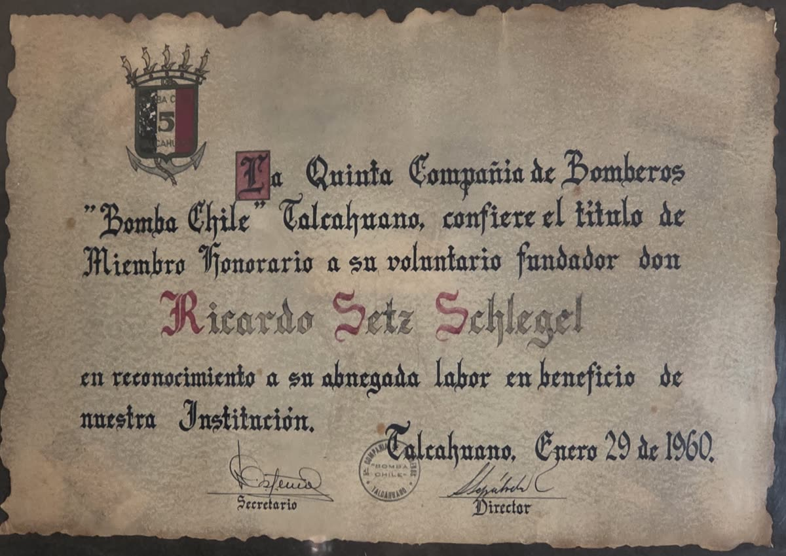
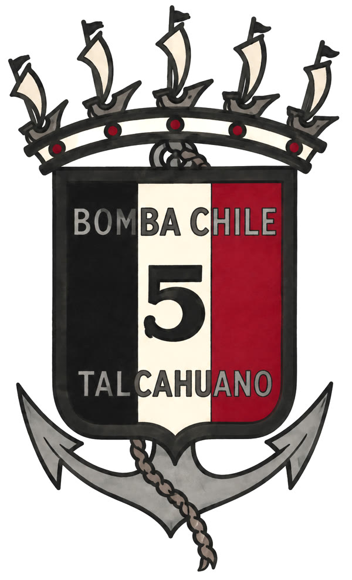
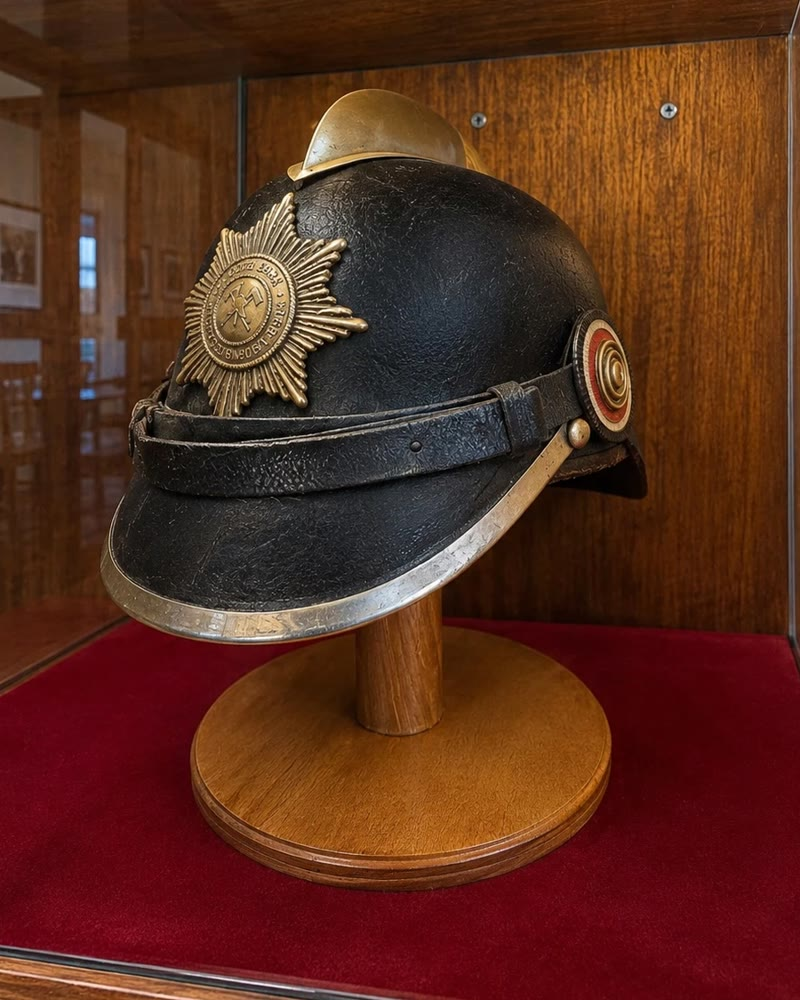
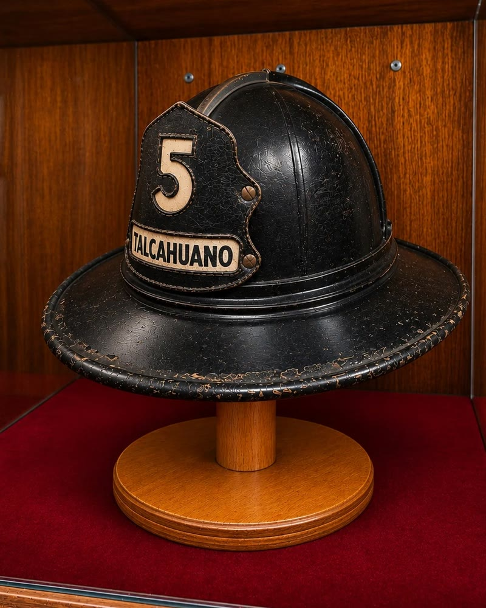
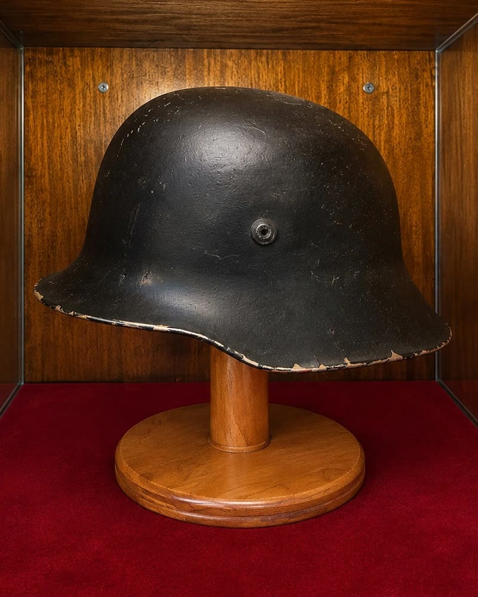
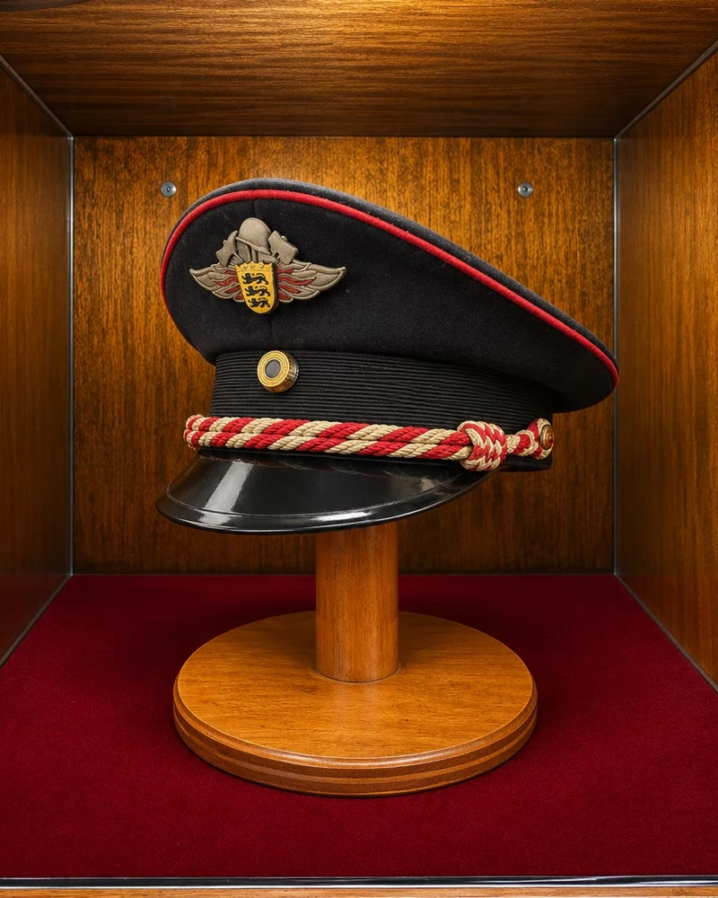

Documentos y objetos que guardan la historia de la Quinta.
El primer nombre y timbre
En sus primeros días la compañía se llamó «Deutsche Feuerwehrkompagnie “Chile”», como se lee en una carta fechada en Talcahuano el 30 de enero de 1908, al día siguiente de su fundación. Su timbre decía «Deutsche Feuerwehr Kompagnie “Chile” No. 5, Talcahuano».


Diploma de Miembro Honorario de Ricardo Setz Schlegel
El 29 de enero de 1960, en el aniversario 52 de la compañía, la Quinta confirió el título de Miembro Honorario a su voluntario fundador Ricardo Setz Schlegel, primer Secretario-Tesorero de 1908.


Cascos históricos
Cascos y gorras de otras épocas que la Quinta conserva en sus vitrinas.

Casco de suela con bronce

Casco safari

Casco alemánStahlhelm

Gorra de compañía alemanaSchirmmütze